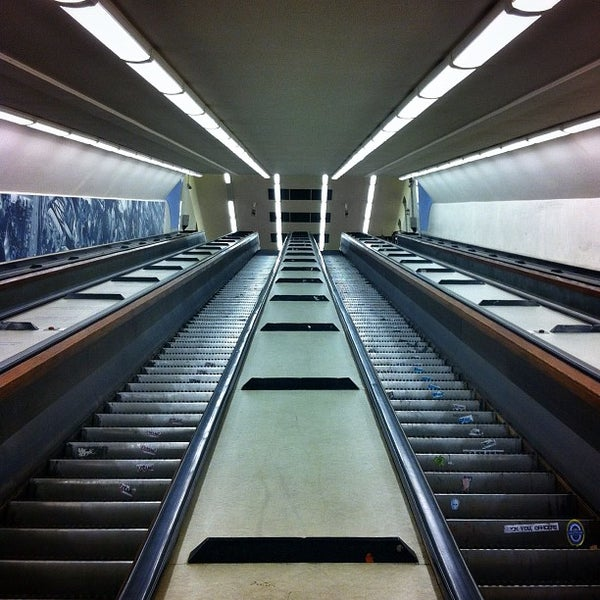
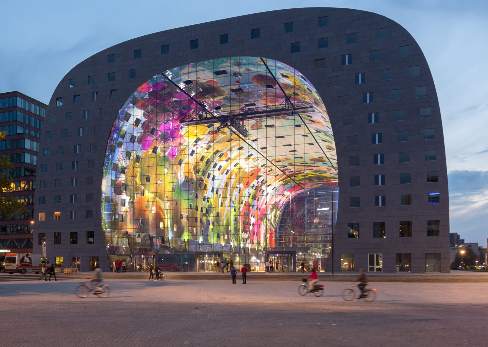

CUBIC HOUSES
Cube houses are a set of innovative houses built in Helmond and Rotterdam in the Netherlands, designed by architect Piet Blom and based on the concept of "living as an urban roof": high density housing with sufficient space on the ground level, since its main purpose is to optimise the space inside. Blom tilted the cube of a conventional house corner upwards, and rested it upon a hexagon-shaped pylon. His design represents a village within a city, where each house represents a tree, and all the houses together, a forest. The central idea of the cube houses around the world is mainly optimizing the space, as a house, to a better distribution of the rooms inside.

MAAS TUNNEL
The Maastunnel is a tunnel in Rotterdam, the Netherlands, connecting the banks of the Nieuwe Maas. About 75,000 motor vehicles and a large number of cyclists and pedestrians use the tunnel daily, making the Maastunnel an important part of Rotterdam's road network. Building commenced in 1937 and finished in 1942. There was no official opening ceremony, but the Dutch held an unofficial opening ceremony in secret without Nazi participation.

MARKTHAL
The Markthal is a residential and office building with a market hall underneath, located in Rotterdam. The building was opened on October 1, 2014, by Queen Máxima of the Netherlands. Besides the large market hall, the complex houses 228 apartments, 4,600 m² retail space, 1,600 m² horeca and an underground 4-storey parking garage with a capacity of over 1200 cars.